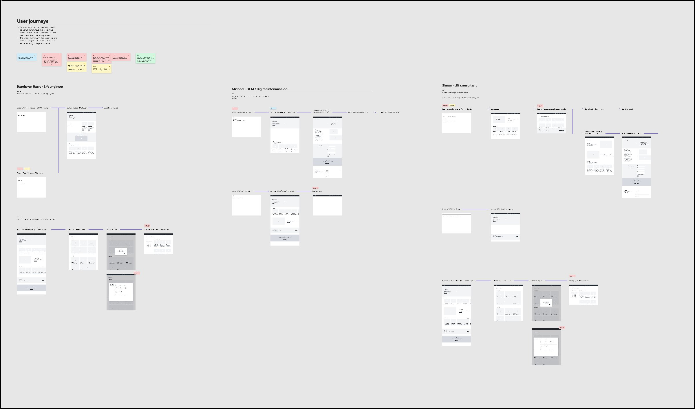
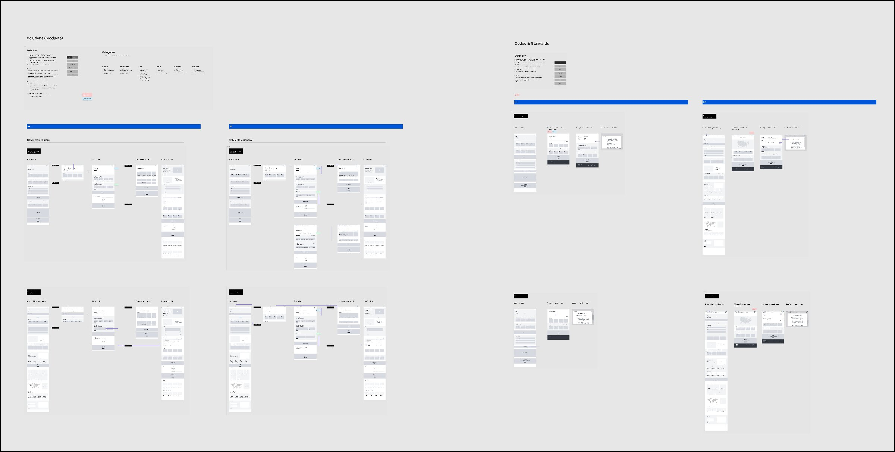
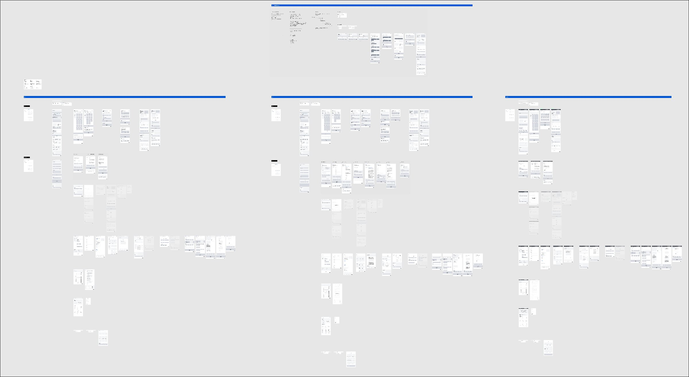
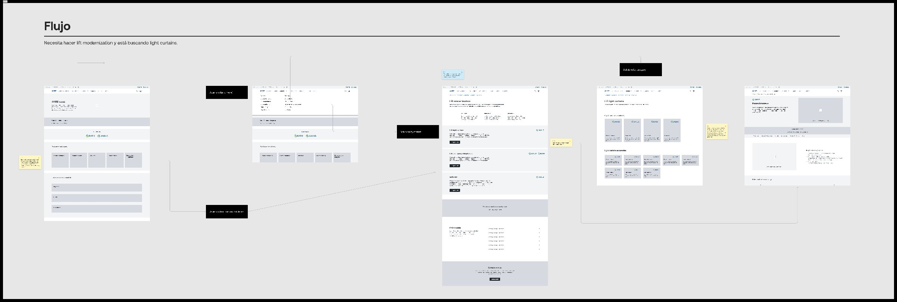
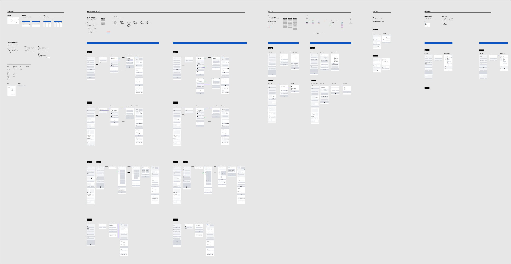

01 · Discovery
Before Any Screen: A Two-Day Workshop in Valencia
Before any screen was drawn or a single persona flow mapped, the project started with an audit of the existing Avire website and a requirements-gathering phase run directly with the Avire team, including a two-day in-person workshop hosted at the studio's Valencia office. The goal wasn't to propose solutions yet — it was to gather the actual project requirements, get an in-depth understanding of Avire's business and products, and fully understand the challenges the team was facing, before exploring any design direction.
Day one worked outward from Avire itself: a structured brief covering the customer, brand, and product range, a screen-by-screen walkthrough of the existing website with critique captured in the moment, and a first pass at mapping user journeys for each core role — consultant, installer/owner, engineer, architect, facility manager — directly on the whiteboard. Day two turned that raw material into direction: an audit of the existing sitemap and its SEO structure, a competitor likes/dislikes exercise, and a feature-prioritization session that sorted every idea on the table by actual business value before a single wireframe existed.
Key insight
Stakeholder interviews run alongside the workshop — with marketing, general management, and technical support across three regions — surfaced the tension the rest of this notebook keeps circling back to: Avire wanted one company voice, but its sub-brands carried real weight in each regional market and had already tried and failed to be "overbranded" once before. The interviews also flagged that Avire was actively shifting from a hardware-only business toward software and monitoring, and wanted to be seen as a standards-and-regulations expert rather than just a parts supplier. Brand tension, a hardware-to-software shift, and a regulations-led positioning — these three findings shaped the task-based navigation and persona work that follows, long before a single wireframe existed.
Artefacts
The full workshop record
The complete workshop report and the stakeholder-interview insights are documented in full below — the agenda, every exercise, and the raw notes behind the summary above.
02 · Early Explorations
Starting from Three Very Different People
With those requirements in hand, three persona-specific flows were mapped independently: Hands-on Harry (lift engineer), Michael (OEM / big maintenance company), and Simon (lift consultant). Each had a different entry point and a different definition of "done" — which is what later drove the task-based navigation ("Install," "Maintain," "Comply") over Avire's internal product taxonomy. Mapping them side by side, rather than sequentially, made the mismatch impossible to ignore: a navigation built around Avire's product categories made sense internally, but none of these three people thought in those terms when they arrived at the site.

Key insight
The homepage problem wasn't a homepage problem
Comparing these three flows is what first surfaced the tension the live case study names directly: the site had to work as a brand hub for consultants and a technical tool for engineers, and no single layout could be the "default" experience for both. That insight came from this mapping exercise, not from a stakeholder brief.
03 · Wireframes
Wireframes Before Pixels
Early wireframes for the Solutions and Codes & Standards sections were built in grey-box form first, including a dedicated variant for the OEM / big-company persona — testing structure and hierarchy before any visual design decisions were made. Grey-box first was a deliberate constraint: it kept review conversations focused on whether information was in the right place, instead of derailing into color and typography before the structure had earned it.

Mapping the full system
Wireframing scaled from individual sections to a full site map with linked prototype flows across breakpoints — the connective structure that had to hold together a brand hub and a technical resource library at once. Linking everything into a clickable flow at wireframe stage, rather than after visual design, made it possible to test whether an engineer could reach a troubleshooting PDF in roughly the same number of taps a consultant needed to reach a compliance spec — before either journey was locked in.

Design decision
Validating structure with a full clickable prototype before visual design started meant navigation problems got caught and fixed when they only cost a wireframe edit — not a rebuilt component after launch. The prototype below is that same file, not a polished stand-in.
04 · Iterations
Testing a Real Scenario
Rather than reviewing screens in isolation, key flows were walked through against a concrete task scenario — a lift consultant who needs to modernize a lift and is searching for light curtains — with issues and open questions annotated directly on the screens. The friction points marked here — unclear compliance terminology, a resource search sorted by document type instead of task — fed directly into the terminology and resource-categorization fixes described in the live case study's testing phase.

Trade-off
Depth for consultants vs. speed for engineers
Walking through this scenario made the two audiences' conflicting needs concrete rather than theoretical: the consultant wanted enough compliance detail to trust the recommendation, while an engineer in the same flow just wanted the part number. Resolving it meant surfacing a short answer first, with depth one click away — not trying to satisfy both in the same paragraph.
05 · Final Direction
From Moodboard to Final UI
Visual direction started with references, a moodboard, and an icon-style test — then moved to an early visual design pass mapped directly against the wireframes it replaced, and finally to the polished system shown in the live case study. Mapping each new visual screen against the wireframe it replaced, side by side, is how the team caught spots where the brand refresh had quietly disturbed the information hierarchy the wireframe had deliberately set up.
View the full moodboard PDF · concept, colour, typography, and graphic direction ↗The flow that shipped
The final information architecture consolidated everything above into one structure spanning Solutions, Codes & Standards, Support, and Resources — the version that shipped. It's flatter than the product-category taxonomy it replaced, and flatter by design: every extra layer was one more place an engineer standing on a job site could give up and pick up the phone instead.

06 · Learnings
What This Shows
Reflection
The CMS-first constraint described in the case study wasn't decided in a vacuum — it's visible here in how many directions were tested and set aside before the modular system emerged. The persona flows, the wireframe-to-visual pairings, and the annotated walkthrough are the working proof behind that trade-off. Working backwards from what a non-technical marketing team could realistically maintain — rather than designing an ideal layout first — is the kind of constraint that only shows up when you look at the process, not just the result.
What I'd improve today
Test the OEM / big-company variant on its own, not as a footnote
It got a dedicated wireframe early on, but by final visual design it had been folded back into the general engineer flow to save time. Revisiting this now, I'd keep it as its own tested path — the gap between a solo installer and a maintenance company managing hundreds of units is bigger than the merged flow gave it credit for.